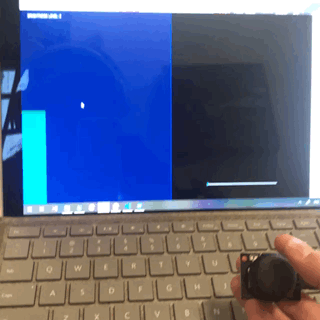

This assignment is identical to A6. My circuit has a joystick input which the Arduino will read X and Y values from. The joystick also has pushbutton functionality but I only wanted to read the directional input. The Arduino sends the joystick X and Y values in an array to a webpage via p5.js. p5.js will then be able to visually depict the data with a graph in green and blue. It's pretty cool. The second part of the circuit has the Arduino read input from the webpage, where a slider controls the brightness of an LED.
The joystick is connected directly to the Arduino using jumper cables. The joystick's VRx and VRy write to pins A1 and A2. I have a blue LED connected to pin 5 through a standard 220Ω resistor. Within the code, p5.js reads the joystick input and draws an updating graph. On the second half of the webpage there is a slider, and the Arduino reads this slider input from p5.js to control the brightness of my blue LED.
This schematic shows both A5 and A6. On the left, the joystick is connected to the Arduino with its GND and +5v pins going right to GND and 5v (duh), VRx connecting to the A1 pin, and VRy connecting to the A2 pin. The SW pin can be left alone because I don't need to use the joystick as a button. On the right, it's a pretty simple LED circuit as described above, connected to pin 5.
My Arduino code for the circuit.
My p5.js code for the webpage.